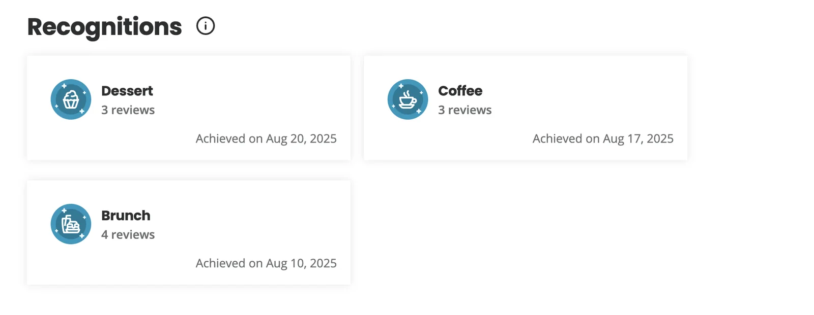
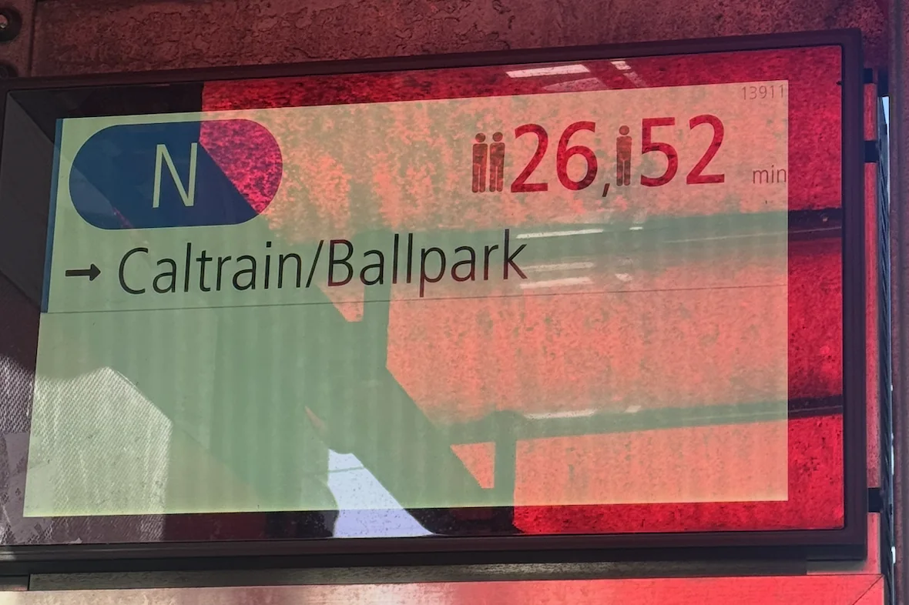
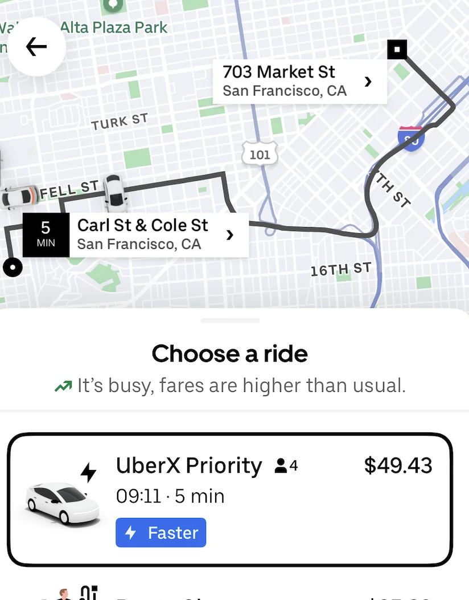
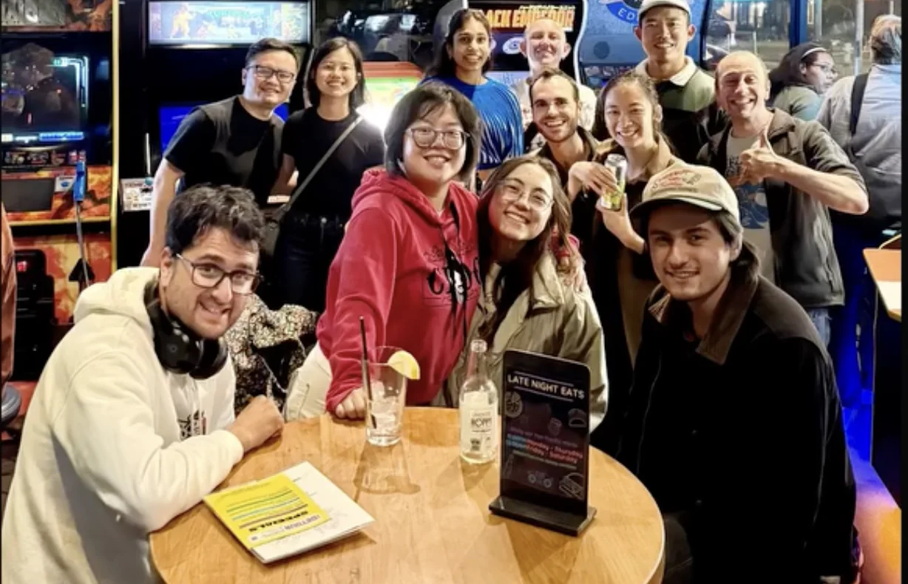
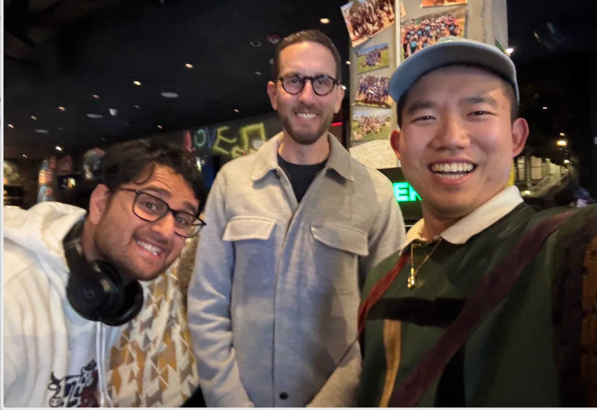
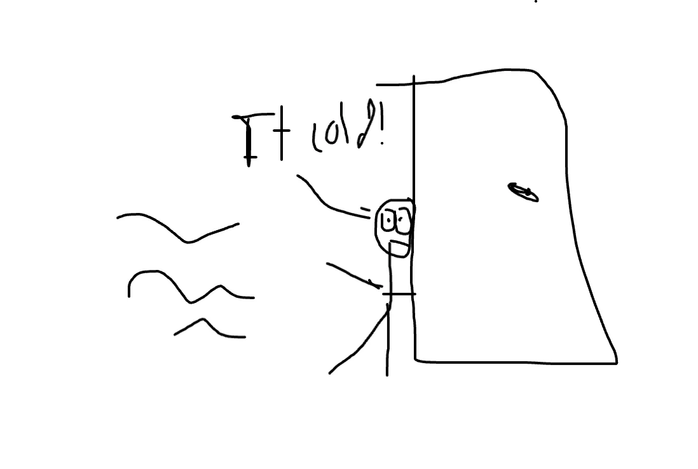

Previous newsletters
If you want to see any of the previous newsletters look here
Shoutouts
Huge congrats to “The fisherman” for finishing CFA level 3! An awesome achievement and you’ve now joined my mental pantheon of two, count them, two CFA level 3 finishers.
Monday
Today starts off as a pedestrian day shuffling code through when I’m informed that we will have a big deadline on Friday for a customer push. Bring it on :D. After work I go home and do nothing of particular interest.
Tuesday
The code caboose keeps chugging as we make our way towards the deadline. We make good progress and have established strong footing but we definitely have a lot more to do. After work today I met up with “The Shadow Brigade” and we walked around for a bit. I show her the Nintendo store which she seems to generally like. She astutely notes that there isn’t really a lot of Pokemon there. I suspect its because Pokemon is so popular they have separate standalone Pokemon stores. It is the highest grossing media franchise after all. We then head to the last supper for “The Professor” before he leaves the Bay Area. Its me, “The Shadow Brigade,” “The Professor,” “The Taco,” “The Plower,” “The Game Master," “The Sparkle,” “The Quant,” and “Mirandom thoughts,
We go to Nakama sushi and Naya dessert cafe where I leave some Yelp reviews. After today I earned a Yelp recognition in “The Dessert” category which should bring me one step closer to becoming Yelp Elite. Hey “The Dentist,” once I become Yelp Elite we should go to some Elite events together :D.

Its a bitter sweet moment when we all part ways. I think back to my friendship with “The Professor” and remember a lot of things. I’m really gonna miss ya but congrats on everything! Looking forward to all the amazing stuff you’ll do! I give him a big hug and head back home to the Humza cave.
I head back to my apartment only to realize the callbox to let myself in isn’t working. Thankfully someone else lets me in. I suspect it's a one off thing and everything will be fine tomorrow. I”m sure this won’t be a plot point later.
Wednesday
Another day of turning matcha lattes (of the non performative male variety) into code awaits.
As I get to the N-line to go the office I get greeted with this

For context I usually have to wait at most 11 minutes for the N with the median wait time being much closer to 6 minutes so this is quite the shock. I wonder if an accident happened. As a comparison I look at the Uber price and see this utter monstrosity. Perhaps an accident happened leading to surge pricing? Generally an Uber from my office (in the Fidi) to Haight Ashbury should only cost around $11 typically perhaps $16 with surge pricing.

Thankfully the 7 bus is still running and my commute is only slightly suboptimal.
Theres a lot to be done today so I skip Midnight Runners and stay at the office until 10pm at which point I’m told I should leave since I wrapped up the main stuff I needed to do. There isn’t an N running for 20 minutes so I decide to Uber. I get in my Uber and after a couple blocks he asks me to input my address. I’m confused by this as I thought I already put in my address the first time. I put it in and he complains about it adding 14 minutes. He asks what happened and I don’t know as I’m very confused. It doesn’t help that its evident English isn’t his first language so articulating isn’t easy here. I look at my Uber and it turns out I accidentally called it from my office to my office! When I checked the Uber price from my apartment to my office this morning it locked in my office as the destination. I give him a big tip and he takes me back to my apartment. Somehow I don’t think he and I became besties during that ride.
I get back to my apartment and once again my callbox isn’t working and once again someone lets me in. I guess this isn’t as much of a one off thing as I thought. Oops.
Thursday-Friday
I’m fusing these days together for reasons that will make sense later.
Its full steam ahead today as we go towards that deadline. Me and 6 other people stay at the office until 4AM. Yeah you read that right we were there til 4AM. I got to the office around 8:30 or so meaning I was in the office for close to 20 hours that day. It was definitely crazy and a bit stressful but also kinda fun in the type II way. I am very thankful to work with folks who I can joke with while being at the office at 4AM. We get a lot done and manage to meet our deadline.
Another thing worth noting is unlike my last job here I’m actually working on things I’m excited will help real people. The work I’m doing is helping to get insurance to approve drugs for patients faster meaning quicker turn around time. I don’t think I need to tell any of y’all that health insurance in this country is bloated and awful and I’m glad I can do something to make it slightly less awful :D.
Since I’m leaving around 4 and I’ve come to the conclusion that my callbox not working isn’t a one time thing I initially think I”ll sleep at the office but one of my coworkers generously offers his couch. Thanks man it was indeed comfier than the office couch!
I sleep there for 2.5 hours til 7 or so then head back to the Humza cave and lie in bed and not really sleep until I get into the office later than usual. Its a relatively chill day today as I code until about 4PM and leave so I can say I left the office at both 4s.
From there I hosted a poker night at my place with “The film maker,” “The Raja of Rhythm,” “Mr. Socksessful,” “The Raven keeper,” and a few others. As has usually been the case for me, Poker is a form of charity where I give to the more fortunate. It was a fun night with some crazy hands and well worth the $10 I donated to the cause. Congrats to “The Ravenkeeper” for winning big and “The Filmmaker” for having a really big winning hand where he went all in and won two buy ins worth with a single hand.
After poker night “The fisherman” comes over and we catch up and talk about life.
For a while I had been planning to do a 24 hour walk starting Saturday at midnight and going until Sunday at midnight. However I asked a bunch of people whether I should still do it given I got so little sleep Thursday night and out of the 8 people I asked they all said no. I’m trying to get better at listening to advice from others and I hate to admit it but if they all said the same thing perhaps they have a point. Here are some of the testimonials I got about the walk
As much as it was the right decision I did feel a little pained by it. After all I’m the guy who commits to the bit. Does this mean I’m going soft? Am I a quitter? I was also told that my motivation of beating out those guys who posted their 100K step walk on the SF reddit wasn’t great motivation.
Saturday-Sunday
The day begins with me sleeping in but still making it to trash pickup. I go with a couple other folks and we pick up trash around Tadaima, the matcha place near 20th and Valencia. One of the people I’m with is annoyed by the attitude and littering of the people sitting down there and calls the people over there “matcha bitches” which I thought was too amusing not to put in the newsletter.
After trash pickup I go to Golden Gate Park and go to “The Slosher’s” bi annual game of Sloshball. For those unaware Sloshball is essentially kickball but with drinking. The rules are that you have to always have a can in your hand and when you get on 2nd base you have to finish your can and take a new one. I wind up deciding to captain one of the teams. Naturally due to my lack of skills in the kicking department and catching department I’m really more of a personality captain.
When I got my team I almost told them “Do you guys wanna win? If so you picked the wrong team :D”. This wound up being correct as we did lose but only by a couple points. It was still quite fun.
Interestingly at this event I met 3 separate people I knew from very different circumstances. I met someone from the chess club I went to a couple times who turned out to be high school friends with “The Slosher,” someone else who is a coworker of “The Juggler,” and a 3rd person who I met through run club.
I also met some people who all went to high school in Davis and told me some pretty interesting stories. Apparently when they were in high school there was a girl who brought some cookies and asked people to guess what was in them. The natural guess for many people was weed but it turns out it was her grandmas ashes. Yeah, that was weirder. It got weirder when they told me about someone called “the cat girl” (not a newsletter nickname) who would go onto the roof and hiss at people. There was also a group of people called “the clusterf*ck” (definitely not a newsletter nickname) who were all in relationships with each other and traded around as a combination of monogamy and a polycule. I can’t say that my impression of Davis as a city soared after this.
I talk with “The Slosher” a bit more and before I leave she mentions that she will try to come to trash pickup. She has said this many times and very seldom comes so I jokingly give her flack for it and mention that she is better at comedy than I am. She then says she will actually come this time and I tell her that if she actually comes I will apologize in this newsletter and say I’m wrong. Will that happen? Stay tuned.
From there I went to The Detour to celebrate “The fisherman” finishing her CFA exam. I got to catch up with “Mr. Greenflag” and “The Trash Queen” as well.

Congrats again on finishing the CFA! We played a bunch of Killer Queen and some big buck hunting. While there we run into Scott Weiner and talk with him for a bit. He says he really liked my Mooni sweater which was great to hear. Me and “Mr. Greenflag” also got a pic with him

It was fun but I was getting tired around 11pm and decided to go home. Well what I thought was going home anyway.
I got back to my apartment and my callbox still wasn’t working. I tried calling a bunch of other people and nobody was awake or decided to let me in. I tried calling my apartment management 24 hour hotline and explained the situation to them. They told me there was nothing they could do. Oops. Now I’m on my own and don’t really have a way into my apartment. At this point I thought it might be fun to try impromptu camping and tried to sleep outside my apartment. I sit down on the floor and try to sleep but unfortunately its harder than I thought to get comfortable. I try for about an hour and 20 minutes but the cold and the weird angle I’m sitting at makes it quite hard. Ooh boy did the cold really bite me. I think if it wasn’t for the cold I may have actually been able to sleep outside. The other thing I was slightly worried about was someone thinking I ODd and trying to inject narcan.

At this point I basically have 3 options
Walk around all night until someone lets me in
Go to the 24 hour happy donuts in Noe valley and camp out there
Get a hotel room and sleep
I choose option 3 because I really don’t wanna be cold anymore. This also teaches me that I may not be suited for camping if I can’t handle impromptu camping like this. I splurge and order a Waymo to the hotel so I can relax in a heated jaguar for a bit more. I stay at the Surf Motel over in the Marina for a few hours and get some sleep.
Afterwards I go trash pickup and lo and behold I see “The Slosher” walk through. “The Slosher,” I am sorry I underestimated you. I was wrong and my intelligence is clearly on the level of a below average blueberry. Perhaps someday it will climb to the level of a below average raspberry.
We pick up trash along with a new friend we met. The 3 of us have now made plans to go to a Cave rave at the end of September so we shall see how that goes.
Afterwards I go back to my apartment and finally get a front door key from my apartment manager so now I don’t have to rely on someone else to let me in. Progress!
Afterwards I do a bit of work and then invite “The Quant” and “The Taco” to come over for a chill hangout. I then take a nap which I generally hate doing but I was really tired. I then write this newsletter.